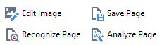
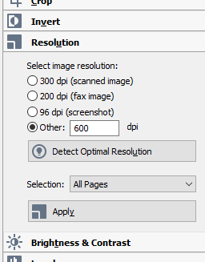
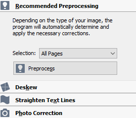
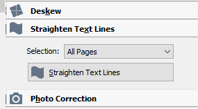

Image Preprocessing
Preprocess all images in a new OCR Project before drawing boxes.
The first task with any new ocr-project is to optimize the page images before beginning the OCR process.
DANGER: This must be done before you begin drawing boxes. It will remove all boxes if they
already exist.
-
Open a new ocr-project in ABBYY FineReader. For any
page, select the Edit Image icon on the Image Pane
toolbar.

The Image Editor window opens. -
In the right-hand panel, open the Resolution
dialogue.
Figure 1. The Resolution dialogue 
- Set the Selection: dropdown menu to All Pages. Click Detect Optimal Resolution. Click Apply.
-
Open the Recommend Preprocessing dialogue at the top of
the panel. Set Selection: to All
Pages. Click Preprocess.
Figure 2. The Recommended Preprocessing dialogue. 
-
For eb07 using images from the National Library of
Scotland, also select the option for Straighten Text
Lines and set to All.
Figure 3. eb07 only 
- Wait for preprocessing to complete, and then close the image editor with the Exit Image Editor option at the top of the image page.
- Save the ocr-project to preserve your changes.